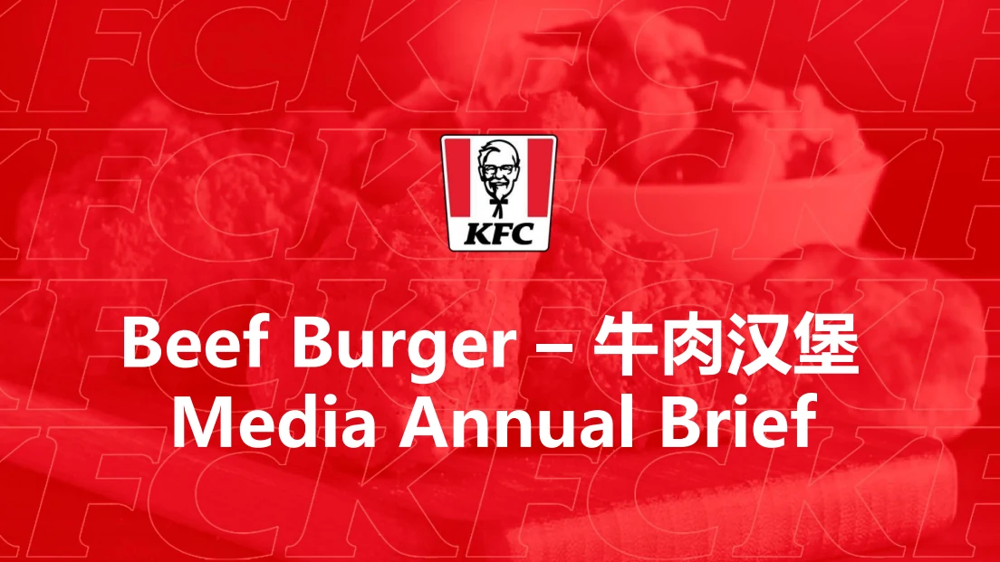
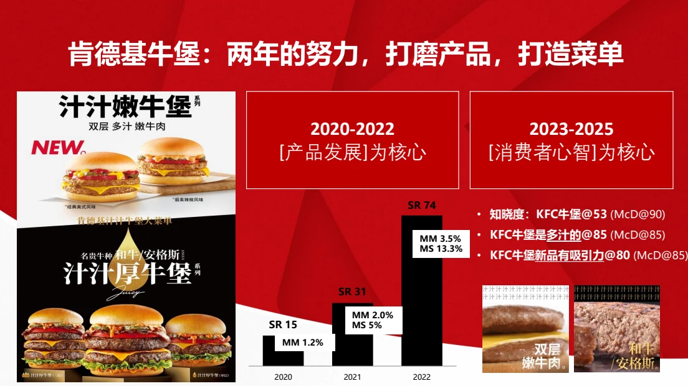
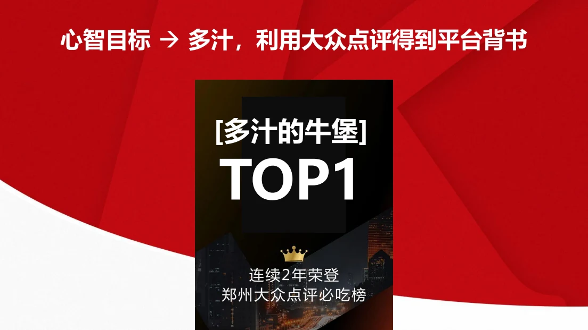
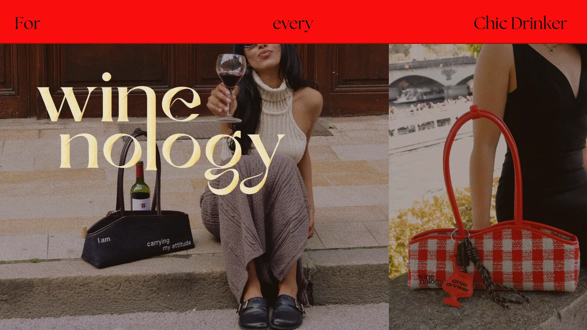
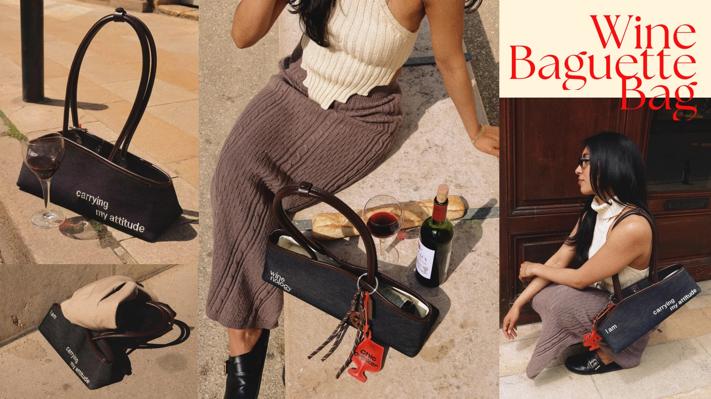
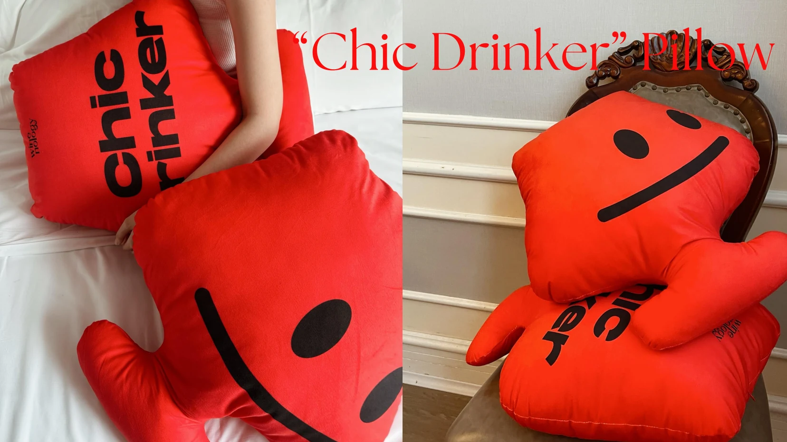
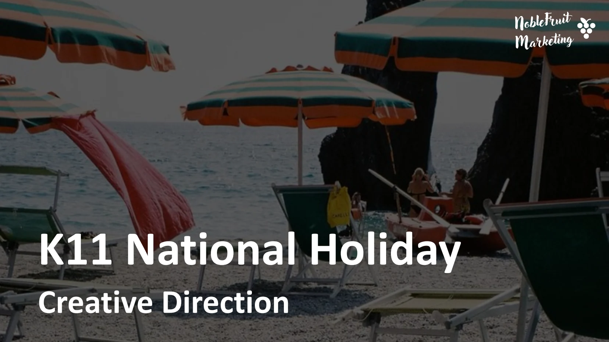
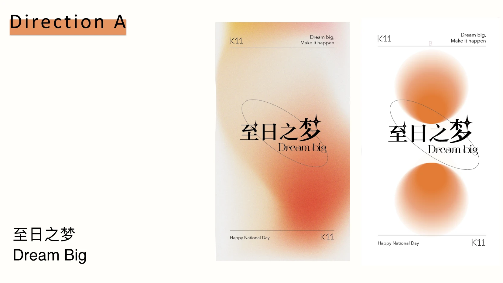
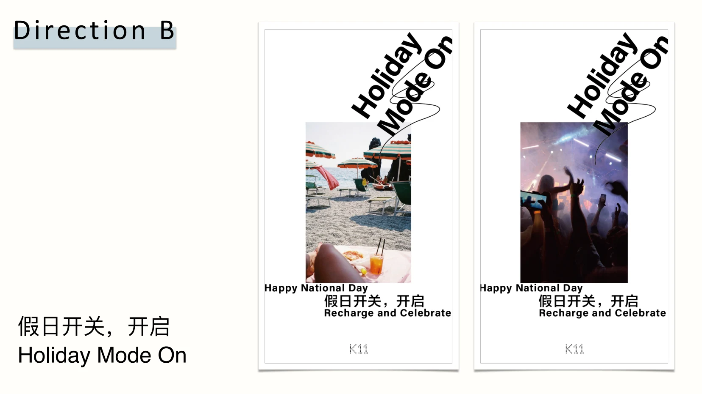
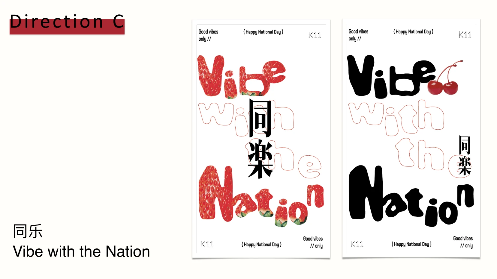

Scale and rigor
Large-company experience leading integrated campaigns, annual media investment and multi-agency teams.
Brand & Social Media Marketing Strategist
Based in France · Working internationally
I connect brand strategy with social content strategy, turning a clear position into campaigns, creator programs and content systems that grow.
View selected workLarge-company experience leading integrated campaigns, annual media investment and multi-agency teams.
Hands-on experience taking both client and founder-led brands from positioning to product, content and launch.
Work across China, the US and France, with content adaptation in Mandarin, English and French.
Selected work · 2020—Present
01 · Yum China
Building a distinctive burger category through positioning, integrated campaigns and social-first activation.

I translated consumer insight into product positioning, a clear creative territory and an integrated media system. I led competitive pitches, aligned 5–8 agency partners, and turned hero campaign ideas into platform-native social content and creator assets.


02 · Founder project
Creating a wine lifestyle brand—and its audience—from an empty page.

I led the brand from concept to launch, shaping the positioning, identity direction, products, English web copy and content. The audience grew through original storytelling, disciplined organic publishing and creator partnerships—not paid reach.


03 · Client project
Building a high-frequency content engine across cultures and platforms.
I turned French source material into stories that could travel, adapting hooks, pacing, cultural context, subtitles and voice for Chinese and international audiences. The result was a repeatable weekly system built for rapid audience learning.
04 · Creative strategy
Developing three bilingual creative territories for a national cultural moment.

I developed three bilingual creative routes—Dream Big, Holiday Mode On and Vibe with the Nation. Each direction translated a shared moment into a distinct emotional promise, campaign line and visual world.



About
My strongest work lives where brand direction and social behavior meet.
I know how to steward scale—leading campaigns, budgets and agency teams inside a major consumer brand. I also know how to start with an empty page: define a position, make the product, build the content system and find the first audience.
Having worked and studied across China, the US and France, I look beyond translation to the cultural tension, platform behavior and storytelling code that make an idea feel native.